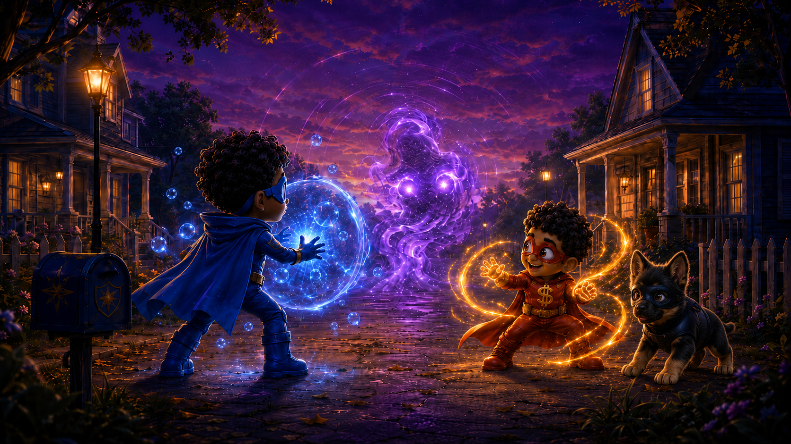
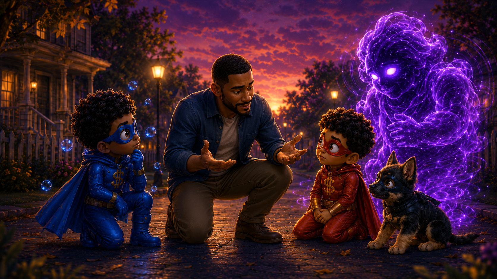
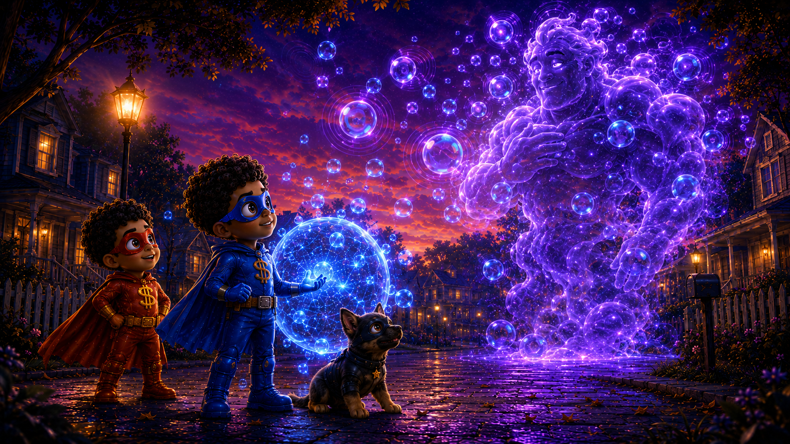
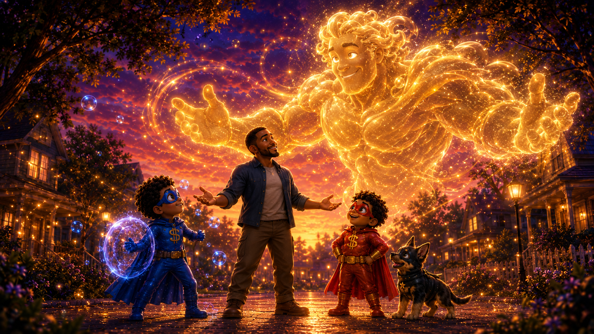

Sparkle Shield Bros
Superhero adventures for kind hearts, brave choices, and growing families.
For Kids
You'll help Kairo, Captain Cash, and Ninja Nugs choose what to do when something strange shows up on their street. Every choice changes the story!
For Grown-Ups
This is a choice-driven picture book about calm, kindness, courage, and repair. There are three paths and three endings — replay to find them all.

Chapter 1 · Maplewood Terrace, Dusk
The Echo Ogre Appears
The streetlights on Maplewood Terrace flickered purple.
Between the porches and the garden gnomes, something new stood still.
It was a swirling shadow, taller than the mailbox.
It hummed with every sound on the block — a radio next door, a dog barking, Dad's wind chimes.
Kairo and Captain Cash stopped building their blanket fort.
The shape watched them. It waited.
Whatever they do next, it will copy — and grow.

Chapter 2 · The Rush Path
Fast Hands
Captain Cash rushed in and swung his rescue energy at the shape.
The Ogre swung back — bigger, louder, faster.
Every quick move Cash made, the Ogre copied double.
Cash skidded to a stop, breathing hard.
"Um... it's copying me," he said.
Chapter 3 · A Hard Moment
Noticing What Happened
Cash noticed his fast hands made the Ogre bigger, not smaller.
That's okay. Fast hands have hard moments sometimes.
And hard moments can always be repaired.

Chapter 2 · The Pause Path
Watching the Pattern
Kairo took a slow breath. He just watched.
The Ogre wasn't attacking. It was copying.
Loud became louder. Calm became calmer.
Chapter 3 · The Pattern Becomes Clear
Calm In, Calm Out
"It's an echo," Kairo whispered.
"It gives back whatever it gets."
The Ogre's colors slowed down, curious about the quiet.

Chapter 2 · The Ask-Dad Path
Dad Kneels Down
Dad came outside and knelt between the boys.
"I used a loud voice earlier tonight," he said. "I'm sorry. Let me try again — calmly."
He turned to the Ogre and spoke softly. The shape flickered, listening.
Chapter 3 · A Breath Together
Try It With Your Body
Kairo and Cash breathed slowly with Dad. Their shoulders came down.

Ending · Fast Hands
Bigger, Not Better
Rushing in made the Echo Ogre twice as big and twice as loud.
Nobody got hurt, but the block stayed tense all night.
Fast hands had a hard moment. That's repairable.
Captain Cash's power works best when he slows down enough to choose wisely.
Tomorrow, he'll get another chance to try a calmer path.

Ending · Bubble Pause
The Pattern Becomes Clear
By staying calm, Kairo helped everyone see the truth.
The Ogre only ever echoed what it received.
Quiet, patient attention settled its wild colors into soft, drifting bubbles.
Family idea — Try the Echo Test: one person claps softly, everyone else echoes it softly back. Then try a kind word the same way.

True Ending · Sparkle Shield
The Guardian Awakens
With Dad's calm repair, Kairo's noticing, and Cash's teamwork all working together, the Echo Ogre stopped echoing fear.
It started echoing kindness instead.
Golden light spread over gardens, porches, and the mural on the corner fence. A gentle guardian now watches over Maplewood Terrace, echoing whatever the neighborhood practices most: care.
Hero Files
Meet the Sparkle Shield Bros Universe
Tap a card to open a hero file.
Hero File
Name
For Grown-Ups
Grown-Up Guide: Calm, Kindness, and Repair
SEL Skill Focus
Self-management, relationship skills, and responsible decision-making — the everyday skills behind stopping a hitting habit before it starts.
A Phrase to Practice
"I'm sorry. Let me try again." Said calmly, by a grown-up, this phrase teaches repair better than any lecture.
A Question to Ask Your Child
"What happened when the heroes used kind hands?" Let your child answer in their own words — there's no wrong response.
Today's Family Challenge
Practice the four-step pattern together: stop, breathe, think, choose. Try it once during a calm moment so it's ready during a hard one.
Draw Your Own Echo Ogre
Ask your child to draw what they think an Echo Ogre looks like when it's echoing kindness. Talk about what it might echo in your own home.
Manage Saved Progress on This Device
Unlocked endings and the Sparkle Meter are saved only in this browser, on this device — nothing is sent anywhere. Use this to clear that saved progress, for example if a classroom is sharing one screen.